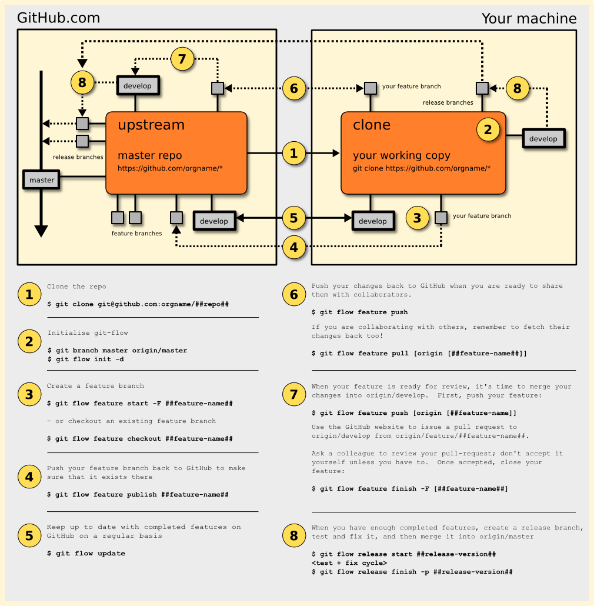

Clone the existing repo from GitHub:
git clone git@github.com:##orgname##/##reponame##
The GitFlow tools need to be initialised before they can be used:
git branch master origin/master
git flow init -d
If you are creating a new feature branch, do this:
git flow feature start -F ##feature-name##
If you are starting to work on an existing feature branch, do this:
git flow feature checkout ##feature-name##
Push your feature branch back to GitHub to make sure that it exists in the master repo:
git flow feature publish ##feature-name##
If the feature branch already exists on the master repo, this command will fail with an error.
git flow update
git flow feature push
git flow feature pull
git flow feature push
Then, use the GitHub website to create a pull request to ##reponame##/develop branch from ##reponame##/feature/##feature-name##.
Ask a colleague to review your pull-request; don’t accept it yourself unless you have to. Once the pull request has been accepted, close your feature using the GitFlow tools:
git flow feature finish -F
When you have enough completed features, create a release branch:
git flow release start ##release-version##
Build the code, deploy it into test environments, find bugs. Fix the bugs directly inside the release branch. Keep building, deploying, debugging, fixing until you’re happy that the release is ready.
When you’re ready to tag the release and merge it back into master and develop branches, do this:
git flow release finish -p ##release-version##